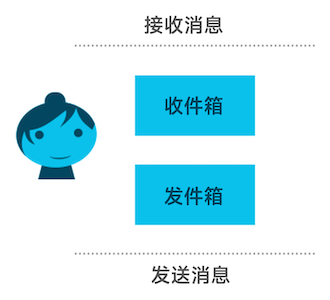
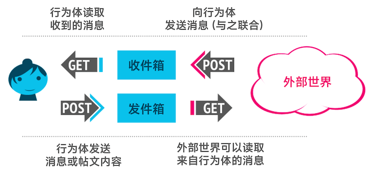
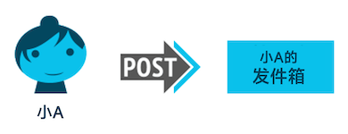
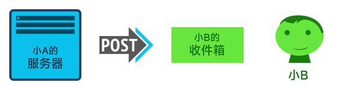
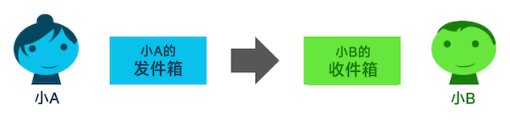

要了解自发布以来报告的任何错误或问题，请查阅 勘误表 。
另可参阅 翻译。
Copyright © 2018 W3C® (MIT, ERCIM, Keio, Beihang). W3C liability, trademark and permissive document license rules apply.
ActivityPub 协议是一个基于 [ ActivityStreams] 2.0 数据格式的去中心化社交网络协议。它提供一套客户端到服务端的 API，用于创建、更新和删除内容，以及一套服务端间的联合 API，用于投递通知和 内容。
本节描述了本文档在发布时的状态。其它文档可能会取代本文档。当前 W3C 发布的文档列表以及本技术报告的最新版本参见 W3C 技术报告索引 (https://www.w3.org/TR/)。
本文档由 社交网络工作组 作为推荐规范发布。
欢迎所有相关方通过工作组的 问题追踪看板 提供实施情况、错误报告和其他意见。这些内容将由 社交网络社区组 进行讨论，并由小组成员考虑决定是否加入到本规范的未来版本。
请参阅工作组的 实现报告。
本文档已经过 W3C 会员、软件开发人员以及其他 W3C 小组和利益相关方的审核，并获指导组批准，成为 W3C 推荐规范。它是一份处于稳定版本的文档，可以作为参考资料或在其他文档中引用。W3C 在制定本推荐规范中的作用是引起大众对本规范的注意，并促进其广泛的部署。这提高了网络的功能与互操作性。
本文档由遵循 W3C 专利政策 的工作组编制。W3C 维护了一个与本小组交付成果相关的所有专利披露的公开列表；该页面还包含披露专利的说明。任何实际知晓某项专利，并认为此专利中含有其 基本权利要求 的个人，必须依照 《W3C 专利政策》第6节 进行信息披露。
本文档受 2017年3月1日的 W3C 过程文档 约束。
ActivityPub 协议有两部分：
ActivityPub 的实现可以只实现其中一种，也可以两种都实现。 不过，一旦实现了其中一种，实现另一种并不会太复杂， 两者都有诸多好处（使你的网站成为去中心化社交网络的一部分， 并能够使用能在各种社交网站上运行的客户端和客户端库）。
在 ActivityPub 中，用户通过其在服务器上的帐户以“行为体”的形式表示。 用户在不同服务器上的帐户对应于不同的行为体。 每个行为体都具有：
inbox（收件箱）：用于接收来自外界的消息outbox（发件箱）：用于向外界发送消息

它们都是端点，或者说，是在 ActivityPub 行为体的 ActivityStreams 描述中列出的 URL。 （稍后详细讨论 ActivityStreams）。
以下是我们的朋友小A的记录示例：
{"@context": "https://www.w3.org/ns/activitystreams",
"type": "Person",
"id": "https://social.example/alyssa/",
"name": "Alyssa P. Hacker",
"preferredUsername": "alyssa",
"summary": "一枚来自 MIT 的 Lisp 爱好者",
"inbox": "https://social.example/alyssa/inbox/",
"outbox": "https://social.example/alyssa/outbox/",
"followers": "https://social.example/alyssa/followers/",
"following": "https://social.example/alyssa/following/",
"liked": "https://social.example/alyssa/liked/"}
ActivityPub使用[ActivityStreams]作为其术语表。 这很好，因为ActivityStreams已经包含了您在社交网络中表示所有活动和内容所需的常用术语。 ActivityStreams很可能已经涵盖了您需要的所有术语，不过即使没有，您也可以通过[JSON-LD]扩展ActivityStreams。 如果您了解JSON-LD，您可以利用JSON-LD提供的优秀的关联数据方法。 如果不了解，也不用担心，JSON-LD文档与ActivityStreams都可以按照传统的JSON来理解。 （当你需要添加扩展时，JSON-LD会真正发挥作用）。
好的，我们考虑以下场景： 小A想和她的朋友们聊天，她的朋友们也想和她聊天。 此时，“收件箱”与“发件箱”可以帮助我们实现这一需求。 它们在 GET 和 POST 请求中的行为不同。 我们看一下它们是如何运作的：

总结一下：
当然，如果最后一种情况（向某人的发件箱发送 GET 请求）是查看别人发送消息的唯一方式，这就不是一个高效的联合协议了！ 实际上，联合通常由服务端进行，服务端将行为体要发送的消息发送到其他服务器上行为体的收件箱中。
让我们看一个例子。 假设小A想和她的朋友小B叙旧。 她最近借给他一本书，想让他读完后还给她。 以下是她撰写的消息，以 ActivityStreams 对象的形式呈现：
{"@context": "https://www.w3.org/ns/activitystreams",
"type": "Note",
"to": ["https://chatty.example/ben/"],
"attributedTo": "https://social.example/alyssa/",
"content": "话说，我借你那本书你读完了没？"}
这是一条发给小B的消息（note）。 小A将这条消息 POST 到自己的发件箱。

由于这是一个非活动对象，服务器会识别出这是一个新创建的对象，并将其包装在一个创建活动（Create actiivty）中。 （在ActivityPub中传递的活动通常遵循某个行为体对某个对象执行某种活动的模式。 在本例中，此活动是由一个Person发布的针对消息对象的创建活动）。
{"@context": "https://www.w3.org/ns/activitystreams",
"type": "Create",
"id": "https://social.example/alyssa/posts/a29a6843-9feb-4c74-a7f7-081b9c9201d3",
"to": ["https://chatty.example/ben/"],
"actor": "https://social.example/alyssa/",
"object": {"type": "Note",
"id": "https://social.example/alyssa/posts/49e2d03d-b53a-4c4c-a95c-94a6abf45a19",
"attributedTo": "https://social.example/alyssa/",
"to": ["https://chatty.example/ben/"],
"content": "话说，我借你那本书你读完了没？"}}
小A的服务器查找小B的 ActivityStreams 行为体对象，找到他的收件箱端点后，将小A的消息对象 POST 到他的收件箱。

严格来说，这分为两个独立的步骤……一个是从客户端到服务端的通信， 另一个是服务端之间的通信（联合）。但是，在本例中我们同时使用了这两种方式， 因此可以抽象地将其理解为一个消息从发件箱到收件箱的传递端过程：

很好，我们继续上面的场景示例。 一段时间后，小A检查了她收到的新消息。 她的手机通过 GET 请求轮询她的收件箱，结果在一堆朋友发布的猫咪视频 和她姐姐发的侄子的照片中，她看到了如下内容：
{"@context": "https://www.w3.org/ns/activitystreams",
"type": "Create",
"id": "https://chatty.example/ben/p/51086",
"to": ["https://social.example/alyssa/"],
"actor": "https://chatty.example/ben/",
"object": {"type": "Note",
"id": "https://chatty.example/ben/p/51085",
"attributedTo": "https://chatty.example/ben/",
"to": ["https://social.example/alyssa/"],
"inReplyTo": "https://social.example/alyssa/posts/49e2d03d-b53a-4c4c-a95c-94a6abf45a19",
"content": "<p>哦哦, 不好意思, 我明天就还你。</p>
<p>我在看注册机那一部分，我很久没写过这个了。</p>"}}
小A松了一口气，赞了小B的帖文：
{"@context": "https://www.w3.org/ns/activitystreams",
"type": "Like",
"id": "https://social.example/alyssa/posts/5312e10e-5110-42e5-a09b-934882b3ecec",
"to": ["https://chatty.example/ben/"],
"actor": "https://social.example/alyssa/",
"object": "https://chatty.example/ben/p/51086"}
她将此消息POST到她的发件箱。 （由于这是一个活动，她的服务器不需要将其封装在创建对象中）。
由于感到很高兴，小A决定向她的关注者发布一条公开消息。 很快，以下消息被发送给她关注者集合中的所有成员，并且由于消息的目标地址包含特殊的公共（Public）组，任何人都可以读取这条消息。
{"@context": "https://www.w3.org/ns/activitystreams",
"type": "Create",
"id": "https://social.example/alyssa/posts/9282e9cc-14d0-42b3-a758-d6aeca6c876b",
"to": ["https://social.example/alyssa/followers/",
"https://www.w3.org/ns/activitystreams#Public"],
"actor": "https://social.example/alyssa/",
"object": {"type": "Note",
"id": "https://social.example/alyssa/posts/d18c55d4-8a63-4181-9745-4e6cf7938fa1",
"attributedTo": "https://social.example/alyssa/",
"to": ["https://social.example/alyssa/followers/",
"https://www.w3.org/ns/activitystreams#Public"],
"content": "有借有还，再借不难 :)"}}
除标记为非规范性的章节外，本规范中的所有撰写指引、图表、示例和注释都是非规范性的。规范中的其他所有内容均为规范性内容。
以下关键词 可以、必须、禁止、应当以及不应当， 应按照 [RFC2119] 中的描述进行解释。
本规范定义了两套紧密相关且相互作用的协议：
ActivityPub规范的设计使得实现了这些协议中的一个后，支持另一个协议所需的额外工作将非常少。 但是，服务端仍可以仅实现其中一个协议。 这带来了三个一致性类别：
规范的某个部分仅适用于联合协议的实现时，均会明确指出。 此外，在指定要求时，会明确说明这些要求是针对客户端还是服务端（对于客户端到服务端协议而言），或是指服务端到服务端协议中的发送方或接收方服务器。
对象是[ActivityStreams]和 ActivityPub两者构建的核心概念。 对象通常嵌套在活动中，包含在集合（Collections）的流中，而集合本身是对象的子类。 请参阅[活动术语表] 文档， 特别是 核心类部分； ActivityPub严格遵从该术语表的映射。
除ActivityStreams提供的术语外，ActivityPub定义了一些额外的术语。
这些额外术语在ActivityPub的
JSON-LD 上下文
中定义，地址为
https://www.w3.org/ns/activitystreams。
实现者应当在其对象定义中包含ActivityPub上下文。
实现者可以根据需要添加附加上下文。
ActivityPub 沿用了与 ActivityStreams 相同的 URI / IRI 约定。
服务端应当验证其接收的内容，以避免内容欺骗攻击。 （服务端至少应该做到检查对象是否按原始状态接收，但如果可能，使用签名等机制会更好）。 本文档尚未权威性地指定特定的验证机制，但您可参阅安全注意事项以获取一些建议和最佳实践。
{
"@context": "https://www.w3.org/ns/activitystreams",
"type": "Like",
"actor": "https://example.net/~mallory",
"to": ["https://hatchat.example/sarah/",
"https://example.com/peeps/john/"],
"object": {
"@context": {"@language": "en"},
"id": "https://example.org/~alice/note/23",
"type": "Note",
"attributedTo": "https://example.org/~alice",
"content": "我是一只羊"
}
}
id 以确保其存在、为有效对象，且没有错误地表示该对象。
（在本例中，小M可能正在伪造一个据称由小A发布的对象）。
[ActivityStreams] 中的所有对象都应该具有唯一的全局标识符。 ActivityPub 扩展了此要求；以 ActivityPub 协议分发的所有对象必须具有唯一的全局标识符，除非它们是有意被设为瞬态的（例如某些类型的聊天消息或游戏通知等短生命周期且不需要能够被查找的活动）。 这些标识符必须属于以下类型之一：
null 对象的 ID，这意味着该对象是一个匿名对象（作为其上级上下文的一部分）
在服务端间通信中发布的活动必须提供标识符，除非该活动是有意被设为瞬态的。
但是，对于客户端到服务器的通信，接收到没有指定 id 的对象的服务器应在行为体的命名空间中分配一个对象 ID 并将其附加到接收到的对象之上。
所有对象都具有以下属性：
id 可以省略）。
可以针对对象的id属性使用HTTP GET方法以检索活动。
服务器可以按照[RFC7231]中的定义使用HTTP内容协商机制
来选择响应请求时返回的数据类型，
但必须在响应
application/ld+json; profile="https://www.w3.org/ns/activitystreams"
时给出ActivityStreams对象表示格式，
并应当在响应
application/activity+json时也给出ActivityStreams表示格式。
客户端在检索活动时必须指定一个带有
application/ld+json; profile="https://www.w3.org/ns/activitystreams"
媒体类型的Accept标头。
服务端可以对不符合上述要求的请求实施其他行为。 （例如，服务器可能会实现额外的遗留协议，或 使用相同的URI同时提供资源的HTML和ActivityStreams格式）。
服务端可以根据B.1 身份验证和授权中的规定要求身份验证， 并且可以额外地实现其自身的授权规则。 对于未通过身份验证检查的请求，服务器应当返回适当的HTTP错误代码， 或者在对象的存在被认为是私密的情况下返回403 Forbidden错误码。 如果源服务器不希望披露私密目标的存在，可以改为返回404 Not Found状态码。
在[Activity-Vocabulary]
中定义的所有属性之外，ActivityPub 通过源属性（source属性）扩展了对象（Object）。
source属性作为一种出处形式，旨在传达某种来源，用于派生 content 标记，或支持客户端的后续编辑。
通常情况下，客户端会从source转换到content，而不是从content转换为source。
source的值本身就是一个对象，
使用其自身的content和mediaType字段提供来源信息。
{
"@context": ["https://www.w3.org/ns/activitystreams",
{"@language": "en"}],
"type": "Note",
"id": "http://postparty.example/p/2415",
"content": "<p>草莓 <em>十分地</em> 美味！</p>",
"source": {
"content": "草莓 *十分地* 美味！",
"mediaType": "text/markdown"}
}
通常情况下，最好让用户用最初撰写内容的源格式编辑原始文章。
但客户端不一定能为所有源类型提供可靠的友好界面，另外，由于客户端负责将source转换为content，
某些客户端可能会使用其他客户端不知道如何处理的媒体类型。
尽管客户端理论上可以提供可编辑的content标记并忽略源格式，但这意味着用户在今后的修改中将丢失其首选的理想source格式。
因此，这样做的客户端应当提供一个微不足道的警告，说明原始源格式未被识别并将被忽略。
举例来说，小A喜欢使用自己开发的Emacs客户端，通过Org mode在她的ActivityPub博客上发文。
后来她转而使用手机客户端编辑，而该客户端完全不知道text/x-org是什么，也不知道如何将其渲染为HTML，
所以它提供了一个文本框来编辑原始的content。
编辑区上方会显示一个有帮助的警告："这最初是用另一种我们无法处理的标记语言编写的。如果您进行编辑，将会丢失原始来源文本！"
小A认为修复小小的拼写错误不值得失去她精心制作的org-mode标记，于是决定等到回家再进行更新。
ActivityPub 行为体通常是
ActivityStreams 行为体类型 之一，
但并非必须如此。例如，
账户 对象
可以作为行为体，也可作为一个从 ActivityStreams 扩展的类型。
检索行为体的方式与检索 ActivityPub 中的任何其他对象相同。
与其他 ActivityStreams 对象一样，行为体拥有一个 id，
它是一个 URI。
当直接输入到用户界面（例如登录表单）时，最好支持简化的命名方式。
为此，应当 执行以下 ID 规范化操作：
example.org/alice/，客户端可以尝试回落到
一个默认协议，最好是 https。
确定了行为体的 URI 后，应当对其进行解引用。
除必须包含 3.1 对象标识符规定的属性外， 行为体 对象还必须包含以下属性：
OrderedCollection
的引用，包含该行为体接收到的所有消息；详见
5.2 收件箱。
OrderedCollection
的引用，包含该行为体发送的所有消息；详见
5.1 发件箱。
实现者 应当 另外提供以下属性：
实现者 可以 提供以下属性：
除 3.1 对象标识符 中强制要求的属性外，行为体对象必须 具有以下属性：
OrderedCollection（有序集合） 的引用，该集合包含行为体接收到的所有消息；参见
5.2 收件箱。
OrderedCollection（有序集合），包含行为体创建的所有消息；参见
5.1 发件箱。
此外，ActivityPub 实现应当 提供以下属性：
实现可以 提供以下属性：
{
"@context": ["https://www.w3.org/ns/activitystreams",
{"@language": "ja"}],
"type": "Person",
"id": "https://kenzoishii.example.com/",
"following": "https://kenzoishii.example.com/following.json",
"followers": "https://kenzoishii.example.com/followers.json",
"liked": "https://kenzoishii.example.com/liked.json",
"inbox": "https://kenzoishii.example.com/inbox.json",
"outbox": "https://kenzoishii.example.com/feed.json",
"preferredUsername": "kenzoishii",
"name": "石井健蔵",
"summary": "この方はただの例です",
"icon": [
"https://kenzoishii.example.com/image/165987aklre4"
]
}
实现可以额外提供以下属性：
endpoints 映射可以包含以下属性：
x-www-form-urlencoded 格式提交 id 参数，参数值为要请求的 ActivityStreams 对象的 id。
sharedInbox 端点也应该是公开可读的 OrderedCollection 对象，其中包含寻址到公共特殊集合的对象。
从 sharedInbox 端点读取内容时，禁止呈现未寻址到公共（Public）端点的对象。
[ActivityStreams] 是 ActivityPub 的上游术语表，任何适用于 [ActivityStreams] 的属性都可以在 ActivityPub 行为体上使用。 在此特别强调以下 ActivityStreams 属性，以演示它们在 ActivityPub 实现中的使用方法。
id，则指向行为体“账户页面”的链接。
包含自然语言值的属性（如 name、preferredUsername 或 summary）使用在
ActivityStreams 中定义的自然语言支持。
[ActivityStreams] defines the collection concept; ActivityPub defines several collections with special behavior. Note that ActivityPub makes use of ActivityStreams paging to traverse large sets of objects.
Note that some of these collections are specified to be of type
OrderedCollection
specifically, while others are permitted to be either a
Collection
or an
OrderedCollection.
An
OrderedCollection
MUST be presented consistently in reverse chronological order.
What property is used to determine the reverse chronological order is intentionally left as an implementation detail. For example, many SQL-style databases use an incrementing integer as an identifier, which can be reasonably used for handling insertion order in most cases. In other databases, an insertion time timestamp may be preferred. What is used isn't important, but the ordering of elements must remain intact, with newer items first. A property which changes regularly, such a "last updated" timestamp, should not be used.
The outbox is discovered through the outbox
property of an actor's profile.
The outbox MUST be an
OrderedCollection.
The outbox stream contains activities the user has published, subject to the ability of the requestor to retrieve the activity (that is, the contents of the outbox are filtered by the permissions of the person reading it). If a user submits a request without Authorization the server should respond with all of the Public posts. This could potentially be all relevant objects published by the user, though the number of available items is left to the discretion of those implementing and deploying the server.
The outbox accepts HTTP POST requests, with behaviour described in Client to Server Interactions.
The inbox is discovered through the inbox
property of an actor's profile.
The inbox MUST be an
OrderedCollection.
The inbox stream contains all activities received by the actor. The server SHOULD filter content according to the requester's permission. In general, the owner of an inbox is likely to be able to access all of their inbox contents. Depending on access control, some other content may be public, whereas other content may require authentication for non-owner users, if they can access the inbox at all.
The server MUST perform de-duplication of activities returned by
the inbox. Duplication can occur if an activity is addressed both
to an actor's followers, and a specific
actor who also follows the recipient actor, and the server has failed
to de-duplicate the recipients list.
Such deduplication MUST be performed by comparing the
id of the activities and dropping any activities
already seen.
The inboxes of actors on federated servers accepts HTTP POST requests, with behaviour described in Delivery. Non-federated servers SHOULD return a 405 Method Not Allowed upon receipt of a POST request.
Every actor SHOULD have a followers
collection.
This is a list of everyone who has sent a
Follow
activity for the actor, added as a
side effect.
This is where one would find a list of all the actors that are
following the actor.
The followers collection MUST be either an
OrderedCollection
or a
Collection
and MAY be filtered on privileges of an authenticated user
or as appropriate when no authentication is given.
The follow activity generally is a request to see the objects an actor creates. This makes the Followers collection an appropriate default target for delivery of notifications.
Every actor SHOULD have a following collection.
This is a list of everybody that the actor has followed, added as a
side effect.
The following collection MUST be either an
OrderedCollection
or a
Collection
and MAY be filtered on privileges of an authenticated user
or as appropriate when no authentication is given.
Every actor MAY have a liked collection.
This is a list of every object from all of the actor's Like
activities, added as a side effect.
The liked collection MUST be either an
OrderedCollection
or a
Collection
and MAY be filtered on privileges of an authenticated user
or as appropriate when no authentication is given.
In addition to [ActivityStreams] collections
and
objects,
Activities may additionally be addressed to the special "public"
collection, with the identifier
https://www.w3.org/ns/activitystreams#Public.
For example:
{
"@context": "https://www.w3.org/ns/activitystreams",
"id": "https://www.w3.org/ns/activitystreams#Public",
"type": "Collection"
}
Activities addressed to this special URI shall be accessible to all
users, without authentication.
Implementations MUST NOT deliver to the "public" special collection;
it is not capable of receiving actual activities.
However, actors MAY have a
sharedInbox
endpoint which is available for efficient shared delivery of public
posts (as well as posts to followers-only); see
7.1.3 Shared Inbox Delivery.
Compacting an ActivityStreams object using the ActivityStreams
JSON-LD context might result in
https://www.w3.org/ns/activitystreams#Public
being represented as simply Public or as:Public
which are valid representations of the Public collection.
Implementations which treat ActivityStreams objects as simply
JSON rather than converting an incoming activity over to a
local context using JSON-LD tooling should be aware of this
and should be prepared to accept all three representations.
Every object MAY have a likes collection.
This is a list of all Like activities with this object
as the object property, added as a
side effect.
The likes collection MUST be either an
OrderedCollection
or a
Collection
and MAY be filtered on privileges of an authenticated user
or as appropriate when no authentication is given.
Care should be taken to not confuse the the
likes
collection with the similarly named but different
liked collection.
In sum:
Like activities performed
by the actor,
added to the collection as a
side effect of delivery to the outbox.
Like activities referencing
this object,
added to the collection as a
side effect of delivery to the inbox.
Activities as defined by [ActivityStreams] are the core mechanism for creating, modifying and sharing content within the social graph.
Client to server interaction takes place through clients posting
Activities to an actor's outbox.
To do this, clients MUST discover the URL of the actor's outbox from
their profile and then MUST make an HTTP
POST request to this URL with the Content-Type of
application/ld+json; profile="https://www.w3.org/ns/activitystreams".
Servers MAY interpret a Content-Type or Accept header of
application/activity+json as equivalent
to application/ld+json; profile="https://www.w3.org/ns/activitystreams"
for client-to-server interactions.
The request MUST be authenticated with the credentials of the user to
whom the outbox belongs.
The body of the POST request MUST contain a single
Activity (which MAY contain embedded objects), or a single non-Activity
object which
will be wrapped in a Create activity
by the server.
POST /outbox/ HTTP/1.1
Host: dustycloud.org
Authorization: Bearer XXXXXXXXXXX
Content-Type: application/ld+json; profile="https://www.w3.org/ns/activitystreams"
{
"@context": ["https://www.w3.org/ns/activitystreams",
{"@language": "en"}],
"type": "Like",
"actor": "https://dustycloud.org/chris/",
"name": "Chris liked 'Minimal ActivityPub update client'",
"object": "https://rhiaro.co.uk/2016/05/minimal-activitypub",
"to": ["https://rhiaro.co.uk/#amy",
"https://dustycloud.org/followers",
"https://rhiaro.co.uk/followers/"],
"cc": "https://e14n.com/evan"
}
If an Activity is submitted with a value in the id
property, servers MUST ignore this and generate a new id
for the Activity.
Servers MUST return a 201 Created HTTP code, and unless
the activity is transient, MUST include the new id in the
Location header.
HTTP/1.1 201 Created
Location: https://dustycloud.org/likes/345
The server MUST remove the bto and/or bcc
properties, if they exist, from the ActivityStreams object before
delivery, but MUST utilize the addressing originally stored
on the bto / bcc properties for determining
recipients in delivery.
The server MUST then add this new Activity to the outbox collection. Depending on the type of Activity, servers may then be required to carry out further side effects. (However, there is no guarantee that time the Activity may appear in the outbox. The Activity might appear after a delay or disappear at any period). These are described per individual Activity below.
Attempts to submit objects to servers not implementing client to server
support SHOULD result in a 405 Method Not Allowed response.
HTTP caching mechanisms [RFC7234] SHOULD be respected when appropriate, both in clients receiving responses from servers as well as servers sending responses to clients.
Clients are responsible for addressing new Activities
appropriately.
To some extent, this is dependent upon the particular client
implementation, but clients must be aware that the server will only
forward new Activities to addressees in the to,
bto, cc, bcc, and
audience fields.
The Followers Collection and/or the Public Collection are good choices for the default addressing of new Activities.
Clients SHOULD look at any objects attached to the new Activity via the
object, target, inReplyTo and/or
tag fields, retrieve their actor or
attributedTo properties, and MAY also retrieve their
addressing
properties, and add these to the to or cc
fields of the new Activity being created.
Clients MAY recurse through attached objects, but if doing so, SHOULD
set a limit for this recursion.
(Note that this does not suggest that the client should "unpack"
collections of actors being addressed as individual recipients).
Clients MAY give the user the chance to amend this addressing in the UI.
For example, when Chris likes the following article by Amy:
{
"@context": ["https://www.w3.org/ns/activitystreams",
{"@language": "en-GB"}],
"id": "https://rhiaro.co.uk/2016/05/minimal-activitypub",
"type": "Article",
"name": "Minimal ActivityPub update client",
"content": "Today I finished morph, a client for posting ActivityStreams2...",
"attributedTo": "https://rhiaro.co.uk/#amy",
"to": "https://rhiaro.co.uk/followers/",
"cc": "https://e14n.com/evan"
}
the like is generated by the client as:
{
"@context": ["https://www.w3.org/ns/activitystreams",
{"@language": "en"}],
"type": "Like",
"actor": "https://dustycloud.org/chris/",
"summary": "Chris liked 'Minimal ActivityPub update client'",
"object": "https://rhiaro.co.uk/2016/05/minimal-activitypub",
"to": ["https://rhiaro.co.uk/#amy",
"https://dustycloud.org/followers",
"https://rhiaro.co.uk/followers/"],
"cc": "https://e14n.com/evan"
}
The receiving outbox can then perform delivery to not only the followers of Chris (the liker), but also to Amy, and Amy's followers and Evan, both of whom received the original article.
Clients submitting the following activities to an outbox
MUST provide the object property in the activity:
Create, Update, Delete,
Follow, Add, Remove,
Like, Block, Undo.
Additionally, clients submitting the following activities to an outbox
MUST also provide the target property:
Add, Remove.
The Create activity is used when posting a new object.
This has the side effect that the object embedded within the Activity
(in the object property) is created.
When a Create activity is posted, the actor
of the activity SHOULD be copied onto the object's
attributedTo field.
A mismatch between addressing of the Create activity and its
object is likely to lead to confusion.
As such, a server SHOULD copy any recipients of the Create activity
to its object upon initial distribution, and likewise
with copying recipients from the object to the wrapping
Create activity.
Note that it is acceptable for the object's addressing
to be changed later without changing the Create's
addressing (for example via an Update activity).
For client to server posting, it is possible to submit an object for
creation without a surrounding activity.
The server MUST accept a valid [ActivityStreams] object that
isn't a subtype of Activity in the POST request to the
outbox.
The server then MUST attach this object as the object
of a Create Activity.
For non-transient objects, the server MUST attach an
id to both the wrapping Create and its
wrapped Object.
The Location value returned by the server should be the URL of
the new Create activity (rather than the object).
Any to, bto, cc, bcc,
and audience properties specified on the object MUST be
copied over to the new Create activity by the server.
{
"@context": "https://www.w3.org/ns/activitystreams",
"type": "Note",
"content": "This is a note",
"published": "2015-02-10T15:04:55Z",
"to": ["https://example.org/~john/"],
"cc": ["https://example.com/~erik/followers",
"https://www.w3.org/ns/activitystreams#Public"]
}
{
"@context": "https://www.w3.org/ns/activitystreams",
"type": "Create",
"id": "https://example.net/~mallory/87374",
"actor": "https://example.net/~mallory",
"object": {
"id": "https://example.com/~mallory/note/72",
"type": "Note",
"attributedTo": "https://example.net/~mallory",
"content": "This is a note",
"published": "2015-02-10T15:04:55Z",
"to": ["https://example.org/~john/"],
"cc": ["https://example.com/~erik/followers",
"https://www.w3.org/ns/activitystreams#Public"]
},
"published": "2015-02-10T15:04:55Z",
"to": ["https://example.org/~john/"],
"cc": ["https://example.com/~erik/followers",
"https://www.w3.org/ns/activitystreams#Public"]
}
The Update activity is used when updating an already
existing object.
The side effect of this is that the object MUST be
modified to reflect the new structure as defined in the update
activity, assuming the actor has permission to update this
object.
For client to server interactions, updates are partial;
rather than updating the document all at once, any key value
pair supplied is used to replace the existing value with
the new value.
This only applies to the top-level fields of the updated
object.
A special exception is for when the value is the json
null type; this means that this field should be
removed from the server's representation of the object.
Note that this behavior is for client to server interaction where the client is posting to the server only. Server to server interaction and updates from the server to the client should contain the entire new representation of the object, after the partial update application has been applied. See the description of the Update activity for server to server interactions for more details.
The Delete activity is used to delete an already
existing object.
The side effect of this is that the server MAY replace the
object with a Tombstone of the object
that will be displayed in activities which reference the deleted
object.
If the deleted object is requested the server SHOULD respond with
either the HTTP 410 Gone status code if a Tombstone
object is presented as the response body, otherwise respond with a
HTTP 404 Not Found.
A deleted object:
{
"@context": "https://www.w3.org/ns/activitystreams",
"id": "https://example.com/~alice/note/72",
"type": "Tombstone",
"published": "2015-02-10T15:04:55Z",
"updated": "2015-02-10T15:04:55Z",
"deleted": "2015-02-10T15:04:55Z"
}
The Follow activity is used to subscribe to the
activities of another actor.
The side effect of receiving this in an outbox
is that the server SHOULD add the object to the
actor's following
Collection
when and only if an Accept activity is subsequently
received with this Follow activity as its object.
Upon receipt of an Add activity into the
outbox, the server SHOULD
add the object to the collection specified in the
target property, unless:
target is not owned by the receiving
server, and thus they are not authorized to update it.
object is not allowed to be added to the
target collection for some other reason, at the
receiving server's discretion.
Upon receipt of a Remove activity into the
outbox, the server SHOULD
remove the object from the collection specified in the
target property, unless:
target is not owned by the receiving server, and
thus they are not authorized to update it.
object is not allowed to be removed from the
target collection for some other reason, at the
receiving server's discretion.
The Like activity indicates the actor likes
the object.
The side effect of receiving this in an outbox
is that the server SHOULD add the object to the
actor's liked Collection.
The Block activity is used to indicate that the posting
actor does not want another actor (defined in the object
property) to be able to interact with objects posted by the actor
posting the Block activity.
The server SHOULD prevent the blocked user from interacting with any
object
posted by the actor.
Servers SHOULD NOT deliver Block Activities to their
object.
The Undo activity is used to undo a previous activity.
See the Activity Vocabulary documentation on
Inverse Activities and "Undo".
For example, Undo may be used to undo a previous
Like, Follow, or Block.
The undo activity and the activity being undone MUST both have the
same actor.
Side effects should be undone, to the extent possible.
For example, if undoing a Like, any counter that had
been incremented previously should be decremented appropriately.
There are some exceptions where there is an existing and explicit
"inverse activity" which should be used instead.
Create based activities should instead use
Delete, and Add activities should use
Remove.
Federated servers MUST perform delivery on all Activities posted to the outbox according to outbox delivery.
This section is non-normative.
Servers MAY support uploading document types to be referenced in activites, such as images, video or other binary data, but the precise mechanism is out of scope for this version of ActivityPub. The Social Web Community Group is refining the protocol in the ActivityPub Media Upload report.
Servers communicate with other servers and propagate information across
the social graph by posting activities to actors'
inbox endpoints.
An Activity sent over the network SHOULD have an id,
unless it is intended to be transient (in which case it MAY omit the
id).
POST requests (eg. to the inbox) MUST be made with a
Content-Type of
application/ld+json; profile="https://www.w3.org/ns/activitystreams"
and GET requests (see also 3.2 Retrieving objects)
with an Accept header of
application/ld+json; profile="https://www.w3.org/ns/activitystreams".
Servers SHOULD interpret a Content-Type or Accept
header of application/activity+json as equivalent
to application/ld+json; profile="https://www.w3.org/ns/activitystreams"
for server-to-server interactions.
In order to propagate updates throughout the social graph, Activities are sent to the appropriate recipients. First, these recipients are determined through following the appropriate links between objects until you reach an actor, and then the Activity is inserted into the actor's inbox (delivery). This allows recipient servers to:
Delivery is usually triggered by, for example:
Servers performing delivery to the inbox or
sharedInbox properties of actors on other servers MUST
provide the object property in the activity:
Create, Update, Delete,
Follow, Add, Remove,
Like, Block, Undo.
Additionally, servers performing server to server delivery of the
following activities MUST also provide the target
property: Add, Remove.
HTTP caching mechanisms [RFC7234] SHOULD be respected when appropriate, both when receiving responses from other servers as well as sending responses to other servers.
The following is required by federated servers communicating with other federated servers only.
An activity is delivered to its targets (which are
actors) by first looking up the targets'
inboxes and then posting the activity to those inboxes.
Targets for delivery are determined by checking the
ActivityStreams audience targeting;
namely, the to, bto, cc,
bcc, and audience fields of the activity.
The inbox is determined by first
retrieving the target actor's JSON-LD representation
and then looking up the inbox property.
If a recipient is a Collection or OrderedCollection,
then the server MUST dereference the collection (with the user's
credentials) and discover inboxes for each item in the collection.
Servers MUST limit the number of layers of indirections through
collections which will be performed, which MAY be one.
Servers MUST de-duplicate the final recipient list. Servers MUST also
exclude actors from the list which are the same as the actor
of the Activity being notified about. That is, actors shouldn't have their
own activities delivered to themselves.
What to do when there are no recipients specified is not defined, however it's recommended that if no recipients are specified the object remains completely private and access controls restrict the access to object. If the object is just sent to the "public" collection the object is not delivered to any actors but is publicly viewable in the actor's outbox.
An HTTP POST request (with authorization of the submitting user) is
then made to the inbox, with the Activity as
the body of the request.
This Activity is added by the receiver as an item in the
inbox OrderedCollection.
Attempts to deliver to an inbox on a non-federated server SHOULD
result in a 405 Method Not Allowed response.
For federated servers performing delivery to a third party server, delivery SHOULD be performed asynchronously, and SHOULD additionally retry delivery to recipients if it fails due to network error.
Note: Activities being distributed between actors on the same origin may use any internal mechanism, and are not required to use HTTP.
While it is not required reading to understand this specification,
it is worth noting that ActivityPub's targeting and delivery
mechanism overlaps with the
Linked Data Notifications
specification, and the two specifications may interoperably
combined.
In particular, the inbox property is the same between
ActivityPub and Linked Data Notifications, and the targeting
and delivery systems described in this document are supported
by Linked Data Notifications.
In addition to JSON-LD compacted ActivityStreams documents, Linked
Data Notifications also supports a number of RDF serializations
which are not required for ActivityPub implementations.
However, ActivityPub implementations which wish to be more broadly
compatible with Linked Data Notifications implementations may wish to
support other RDF representations.
When objects are received in the outbox (for servers which support both Client to Server interactions and Server to Server Interactions), the server MUST target and deliver to:
to, bto, cc,
bcc or audience fields if their values
are individuals or Collections owned by the actor.
These fields will have been populated appropriately by the client which posted the Activity to the outbox.
The following section is to mitigate the "ghost replies" problem which occasionally causes problems on federated networks. This problem is best demonstrated with an example.
Alyssa makes a post about her having successfully presented a paper at a conference and sends it to her followers collection, which includes her friend Ben. Ben replies to Alyssa's message congratulating her and includes her followers collection on the recipients. However, Ben has no access to see the members of Alyssa's followers collection, so his server does not forward his messages to their inbox. Without the following mechanism, if Alyssa were then to reply to Ben, her followers would see Alyssa replying to Ben without having ever seen Ben interacting. This would be very confusing!
When Activities are received in the inbox, the
server needs to forward these to recipients that the origin was unable
to deliver them to. To do this, the server MUST target and
deliver
to the values of to, cc, and/or audience
if and only if all of the following are true:
to, cc, and/or
audience contain a Collection owned by the server.
inReplyTo, object,
target and/or tag are objects owned by
the server.
The server SHOULD recurse through these values to look for linked
objects
owned by the server, and SHOULD set a maximum limit for recursion
(ie. the
point at which the thread is so deep the recipients followers may not mind
if they are no longer getting updates that don't directly involve the
recipient).
The server MUST only target the values of to,
cc, and/or audience
on the original object being forwarded, and not pick up any new
addressees whilst recursing through the linked objects
(in case these addressees were purposefully amended by or via the client).
The server MAY filter its delivery targets according to implementation-specific rules (for example, spam filtering).
Receiving a Create activity in an inbox has
surprisingly few side effects; the activity should appear in the
actor's inbox and it is likely that the server will want
to locally store a representation of this activity and its accompanying
object.
However, this mostly happens in general with processing activities
delivered to an inbox anyway.
For server to server interactions, an Update activity
means that the receiving server SHOULD update its copy of the
object of the same id to the copy
supplied in the Update activity.
Unlike the
client to server handling of the Update activity,
this is not a partial update but a complete replacement of the object.
The receiving server MUST take care to be sure that the
Update is authorized to modify its object.
At minimum, this may be done by ensuring that the Update
and its object are of same origin.
The side effect of receiving this is that (assuming the
object is owned by the sending actor / server) the
server receiving the delete activity SHOULD remove its representation
of the object with the same id, and MAY
replace that representation with a Tombstone object.
(Note that after an activity has been transmitted from an origin server to a remote server, there is nothing in the ActivityPub protocol that can enforce remote deletion of an object's representation).
The side effect of receiving this in an inbox is
that the server SHOULD generate either an Accept or
Reject activity with the Follow as the
object and deliver it to the actor of the
Follow.
The Accept or Reject MAY be generated
automatically, or MAY be the result of user input (possibly after
some delay in which the user reviews).
Servers MAY choose to not explicitly send a Reject
in response to a Follow, though implementors ought to
be aware that the server sending the request could be left in an
intermediate state.
For example, a server might not send a Reject to protect
a user's privacy.
In the case of receiving an Accept referencing this
Follow as the object, the server SHOULD add the
actor to the object actor's
Followers Collection.
In the case of a Reject, the server MUST NOT add the
actor to the object actor's
Followers Collection.
Sometimes a successful Follow subscription may
occur but at some future point delivery to the follower fails
for an extended period of time.
Implementations should be aware that there is no guarantee
that actors on the network will remain reachable and should
implement accordingly.
For instance, if attempting to deliver to an actor for perhaps
six months while the follower remains unreachable, it is
reasonable that the delivering server remove the subscriber
from the followers list.
Timeframes and behavior for dealing with unreachable actors are
left to the discretion of the delivering server.
The side effect of receiving this in an inbox is
determined by the type of the object received,
and it is possible to accept types not described in this document
(for example, an Offer).
If the object of an Accept received to an
inbox is a Follow activity
previously sent by the receiver, the server SHOULD add the
actor to the receiver's
Following Collection.
The side effect of receiving this in an inbox is
determined by the type of the object received,
and it is possible to reject types not described in this document
(for example, an Offer).
If the object of a Reject received to an
inbox is a Follow activity
previously sent by the receiver, this means the recipient did not
approve the Follow request. The server MUST NOT add the
actor to the receiver's
Following Collection.
Upon receipt of an Add activity into the
inbox, the server SHOULD
add the object to the collection specified in the
target property, unless:
target is not owned by the receiving server, and
thus they can't update it.
object is not allowed to be added to the
target collection for some other reason, at the
receiver's discretion.
Upon receipt of a Remove activity into the
inbox, the server SHOULD
remove the object from the collection specified in the
target property, unless:
target is not owned by the receiving server, and
thus they can't update it.
object is not allowed to be removed to the
target collection for some other reason, at the
receiver's discretion.
The side effect of receiving this in an inbox is
that the server SHOULD increment the object's count of likes by
adding the received activity to the
likes collection
if this collection is present.
Upon receipt of an Announce activity in an
inbox, a server SHOULD increment the object's count
of shares by adding the received activity to the
shares collection
if this collection is present.
Announce activity is effectively what is known as
"sharing", "reposting", or "boosting" in other social networks.
The Undo activity is used to undo the side effects
of previous activities.
See the ActivityStreams documentation on
Inverse Activities and "Undo".
The scope and restrictions of the Undo activity
are the same as for
the Undo activity in the context of client to server
interactions,
but applied to a federated context.
This section is non-normative.
Building an international base of users is important in a federated
network.
ActivityStreams provides tooling for internationalization of content,
which should be used whenever possible.
However, it can be difficult for implementations to determine which
@language property
to provide for user-submitted content.
The
W3C
Internationalization group
provides some
guidance on language detection.
This section is non-normative.
Servers should not trust client submitted content, and federated servers also should not trust content received from a server other than the content's origin without some form of verification.
Servers should be careful to verify that new content is really posted by the actor that claims to be posting it, and that the actor has permission to update the resources it claims to. See also 3. Objects and B.1 Authentication and Authorization.
It is often convenient while developing to test against a process running on localhost. However, permitting requests to localhost in a production client or server instance can be dangerous. Making requests to URIs on localhost which do not require authorization may unintentionally access or modify resources assumed to be protected to be usable by localhost-only.
If your ActivityPub server or client does permit making requests to localhost URIs for development purposes, consider making it a configuration option which defaults to off.
There are many types of URIs aside from just http and
https.
Some libraries which handle fetching requests at various URI schemes
may try to be smart and reference schemes which may be undesirable,
such as file.
Client and server authors should carefully check how their libraries
handle requests, and potentially whitelist only certain safe URI
types, such as http and https.
Servers should set a limit on how deep to recurse while resolving objects, or otherwise specially handle ActivityStreams objects with recursive references. Failure to properly do so may result in denial-of-service security vulnerabilities.
Spam is a problem in any network, perhaps especially so in federated networks. While no specific mechanism for combating spam is provided in ActivityPub, it is recommended that servers filter incoming content both by local untrusted users and any remote users through some sort of spam filter.
Servers should implement protections against denial-of-service attacks from other, federated servers. This can be done using, for example, some kind of ratelimiting mechanism. Servers should be especially careful to implement this protection around activities that involve side effects. Servers SHOULD also take care not to overload servers with submissions, for example by using an exponential backoff strategy.
Servers should ratelimit API client submissions. This serves two purposes:
In order to prevent a client from being overloaded by oversized Collections, servers should take care to limit the size of Collection pages they return to clients. Clients should still be prepared to limit the size of responses they are willing to handle in case they connect to malicious or compromised servers, for example by timing out and generating an error.
Any activity field being rendered for browsers (or other rich text enabled applications) should take care to sanitize fields containing markup to prevent cross site scripting attacks.
bto and bcc already
must be removed for
delivery,
but servers are free to decide how to represent the object
in their own storage systems.
However, since bto and bcc are only intended
to be known/seen by the original author of the object/activity,
servers should omit these properties during display as well.
This section is non-normative.
This specification comes from years of hard work and experience by a number of communities exploring the space of federation on the web. In particular, much of this specification is informed by OStatus and the Pump API, as pioneered by StatusNet (now GNU Social) and Pump.io. Both of those initiatives were the product of many developers' hard work, but more than anyone, Evan Prodromou has been a constant leader in this space, and it is unlikely that ActivityPub would exist in something resembling its current state without his hard work.
Erin Shepherd built the initial version of this specification, borrowed from the ideas in the Pump API document, mostly as a complete rewrite of text, but sharing most of the primary ideas while switching from ActivityStreams 1 to ActivityStreams 2.
Jessica Tallon and Christine Lemmer-Webber took over as editors when the standard moved to the W3C Social Working Group and did the majority of transition from Erin Shepherd's document to its current state as ActivityPub. Much of the document was rewritten and reorganized under the long feedback process of the Social Working Group.
ActivityPub has been shaped by the careful input of many members in the W3C Social Working Group. ActivityPub especially owes a great debt to Amy Guy, who has done more than anyone to map the ideas across the different Social Working Group documents through her work on [Social-Web-Protocols]. Amy also laid out the foundations for a significant refactoring of the ActivityPub spec while sprinting for four days with Christopher Allan Webber. These revisions lead to cleaner separation between the client to server and server components, along with clarity about ActivityPub's relationship to [LDN], among many other improvements. Special thanks also goes to Benjamin Goering for putting together the implementation report template. We also thank mray for producing the spectacular tutorial illustrations (which are licensed under the same license as the rest of this document).
Many people also helped ActivityPub along through careful review. In particular, thanks to: Aaron Parecki, AJ Jordan, Benjamin Goering, Caleb Langeslag, Elsa Balderrama, elf Pavlik, Eugen Rochko, Erik Wilde, Jason Robinson, Manu Sporny, Michael Vogel, Mike Macgirvin, nightpool, Puck Meerburg, Sandro Hawke, Sarven Capadisli, Tantek Çelik, and Yuri Volkov.
This document is dedicated to all citizens of planet Earth. You deserve freedom of communication; we hope we have contributed in some part, however small, towards that goal and right.
1.1 社交网络工作组
ActivityPub 是社交网络工作组正在制定的几个相关规范之一。 对其他方法与补充协议感兴趣的实现者应查阅[Micropub]及其概述文档 [社交网络协议]。